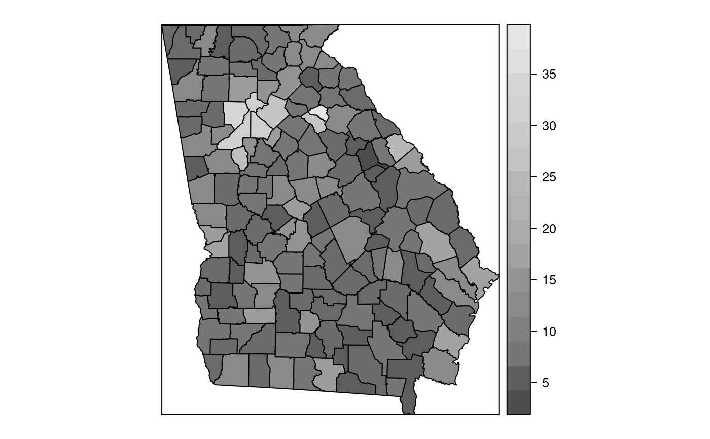
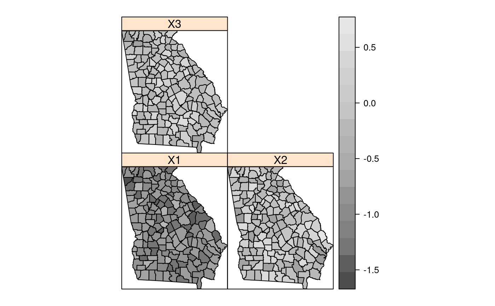
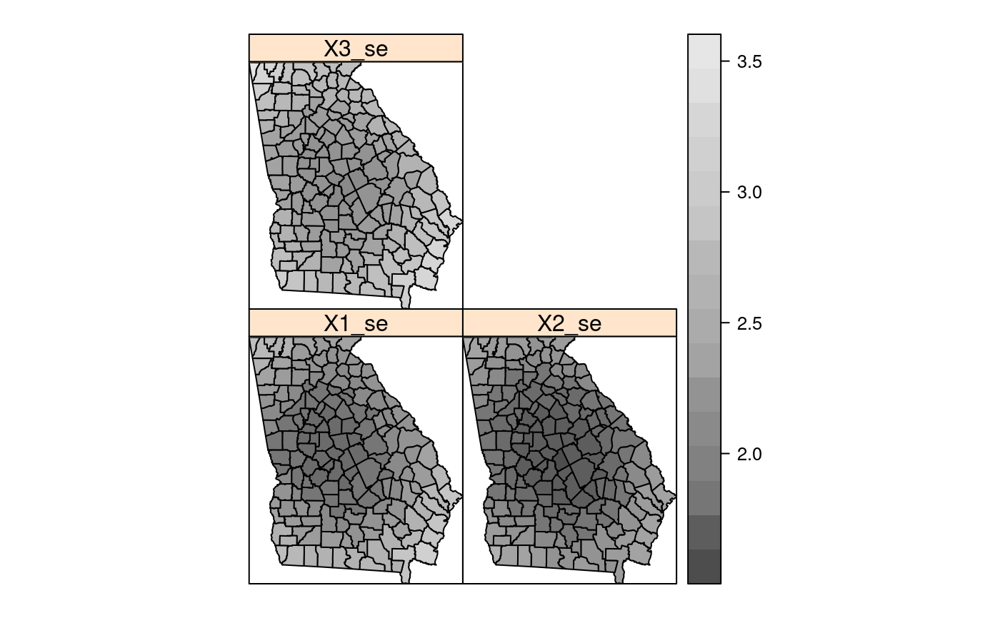
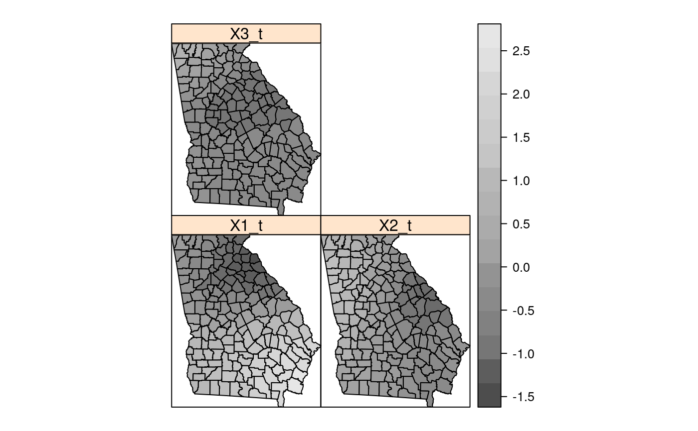
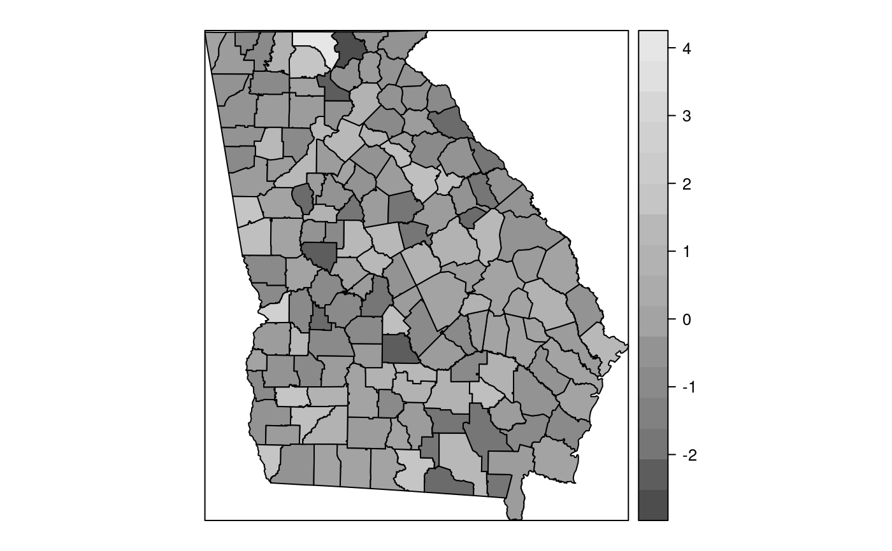
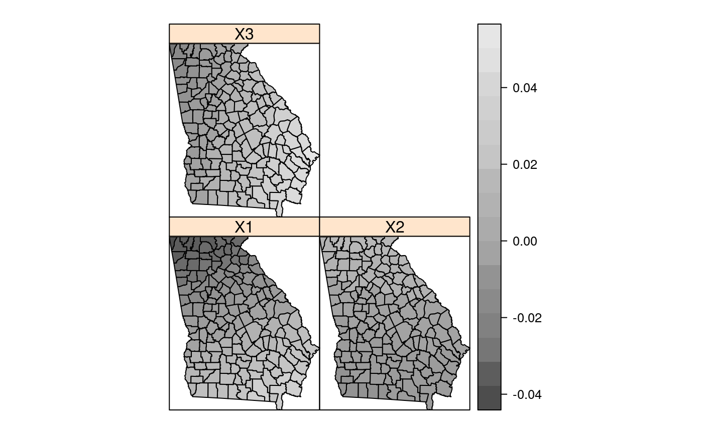
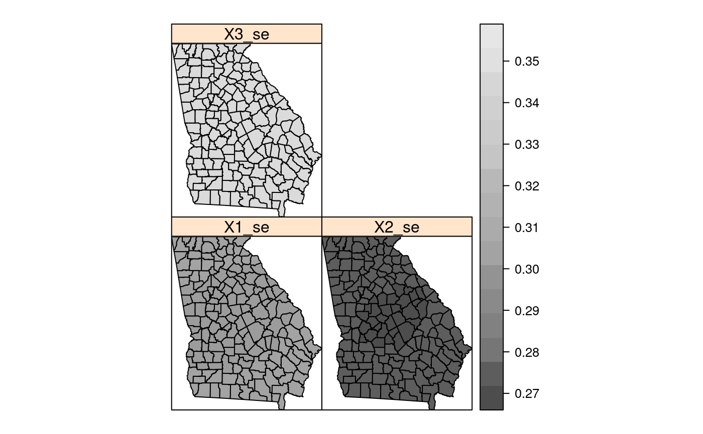
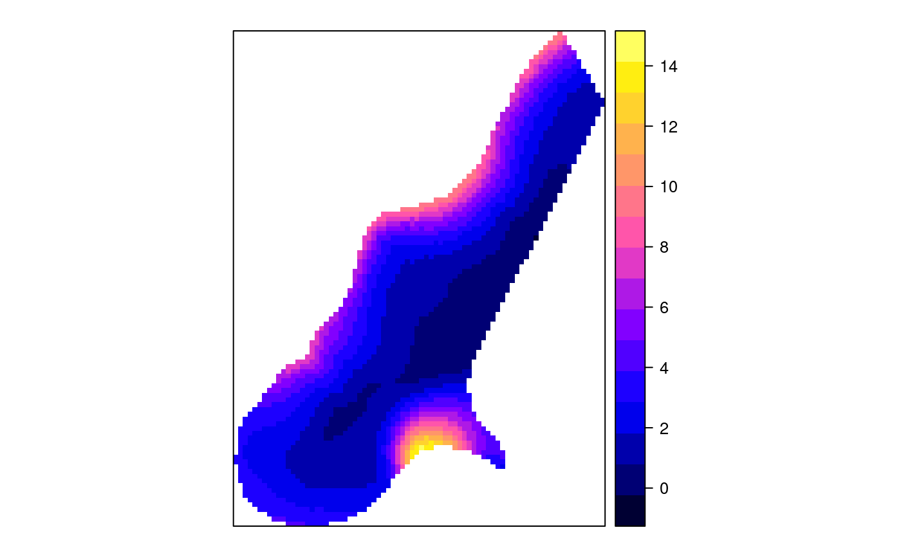
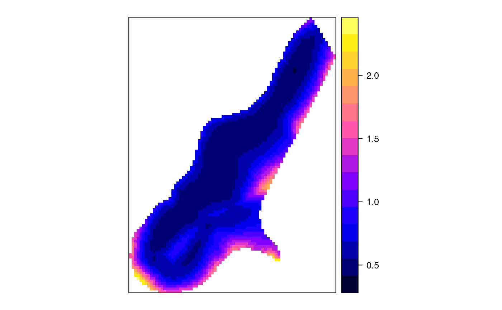
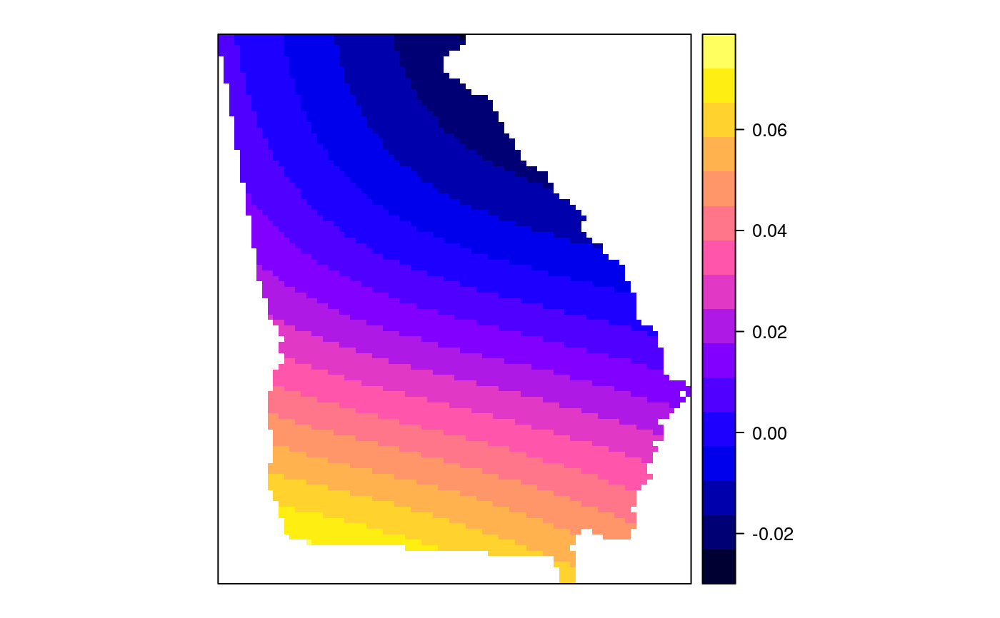

gwr.RdThe function implements the basic geographically weighted regression approach to exploring spatial non-stationarity for given global bandwidth and chosen weighting scheme.
gwr(formula, data=list(), coords, bandwidth, gweight=gwr.Gauss,
adapt=NULL, hatmatrix = FALSE, fit.points, longlat=NULL,
se.fit=FALSE, weights, cl=NULL, predictions = FALSE,
fittedGWRobject = NULL, se.fit.CCT = TRUE)
# S3 method for gwr
print(x, …)
| formula | regression model formula as in |
|---|---|
| data | model data frame, or SpatialPointsDataFrame or SpatialPolygonsDataFrame as defined in package sp |
| coords | matrix of coordinates of points representing the spatial positions of the observations; may be omitted if the object passed through the data argument is from package sp |
| bandwidth | bandwidth used in the weighting function, possibly
calculated by |
| gweight | geographical weighting function, at present
|
| adapt | either NULL (default) or a proportion between 0 and 1 of observations to include in weighting scheme (k-nearest neighbours) |
| hatmatrix | if TRUE, return the hatmatrix as a component of the result, ignored if |
| fit.points | an object containing the coordinates of fit points; often an object from package sp; if missing, the coordinates given through the data argument object, or the coords argument are used |
| longlat | TRUE if point coordinates are longitude-latitude decimal degrees, in which case distances are measured in kilometers; if x is a SpatialPoints object, the value is taken from the object itself |
| se.fit | if TRUE, return local coefficient standard errors - if |
| weights | case weights used as in weighted least squares, beware of scaling issues, probably unsafe |
| cl | if NULL, ignored, otherwise |
| predictions | default FALSE; if TRUE and no fit points given, return GW fitted values at data points, if fit points given and are a Spatial*DataFrame object containing the RHS variables in the formula, return GW predictions at the fit points |
| fittedGWRobject | a fitted |
| se.fit.CCT | default TRUE, compute local coefficient standard errors using formula (2.14), p. 55, in the GWR book |
| x | an object of class "gwr" returned by the |
| ... | arguments to be passed to other functions |
The function applies the weighting function in turn to each of the
observations, or fit points if given, calculating a weighted regression
for each point. The results may be explored to see if coefficient values vary over space. The local coefficient estimates may be made on a multi-node cluster using the cl argument to pass through a parallel cluster. The function will then divide the fit points (which must be given separately) between the clusters for fitting. Note that each node will need to have the “spgwr” package present, so initiating by clusterEvalQ(cl, library(spgwr)) may save a little time per node. The function clears the global environment on the node of objects sent. Using two nodes reduces timings to a little over half the time for a single node.
The section of the examples code now includes two simulation scenarios, showing how important it is to check that mapped pattern in local coefficients is actually there, rather than being an artefact.
A list of class “gwr”:
a SpatialPointsDataFrame (may be gridded) or SpatialPolygonsDataFrame object (see package "sp") with fit.points, weights, GWR coefficient estimates, R-squared, and coefficient standard errors in its "data" slot.
Leung et al. L matrix
Ordinary least squares global regression on the same model formula, as returned by lm.wfit().
the bandwidth used.
the function call used.
Fotheringham, A.S., Brunsdon, C., and Charlton, M.E., 2002, Geographically Weighted Regression, Chichester: Wiley; Paez A, Farber S, Wheeler D, 2011, "A simulation-based study of geographically weighted regression as a method for investigating spatially varying relationships", Environment and Planning A 43(12) 2992-3010; http://gwr.nuim.ie/
#> #> Call: #> lm(formula = CRIME ~ INC + HOVAL, data = columbus) #> #> Residuals: #> Min 1Q Median 3Q Max #> -34.418 -6.388 -1.580 9.052 28.649 #> #> Coefficients: #> Estimate Std. Error t value Pr(>|t|) #> (Intercept) 68.6190 4.7355 14.490 < 2e-16 *** #> INC -1.5973 0.3341 -4.780 1.83e-05 *** #> HOVAL -0.2739 0.1032 -2.654 0.0109 * #> --- #> Signif. codes: 0 ‘***’ 0.001 ‘**’ 0.01 ‘*’ 0.05 ‘.’ 0.1 ‘ ’ 1 #> #> Residual standard error: 11.43 on 46 degrees of freedom #> Multiple R-squared: 0.5524, Adjusted R-squared: 0.5329 #> F-statistic: 28.39 on 2 and 46 DF, p-value: 9.341e-09 #>#> Bandwidth: 12.65221 CV score: 7432.209 #> Bandwidth: 20.45127 CV score: 7462.704 #> Bandwidth: 7.83213 CV score: 7323.545 #> Bandwidth: 4.853154 CV score: 7307.57 #> Bandwidth: 5.125504 CV score: 7322.796 #> Bandwidth: 3.012046 CV score: 6461.764 #> Bandwidth: 1.874179 CV score: 6473.378 #> Bandwidth: 2.475485 CV score: 6109.995 #> Bandwidth: 2.447721 CV score: 6098.372 #> Bandwidth: 2.228647 CV score: 6064.1 #> Bandwidth: 2.264538 CV score: 6060.774 #> Bandwidth: 2.280666 CV score: 6060.649 #> Bandwidth: 2.274969 CV score: 6060.601 #> Bandwidth: 2.2751 CV score: 6060.601 #> Bandwidth: 2.27506 CV score: 6060.601 #> Bandwidth: 2.275019 CV score: 6060.601 #> Bandwidth: 2.27506 CV score: 6060.601col.gauss <- gwr(CRIME ~ INC + HOVAL, data=columbus, coords=cbind(columbus$X, columbus$Y), bandwidth=col.bw, hatmatrix=TRUE) col.gauss#> Call: #> gwr(formula = CRIME ~ INC + HOVAL, data = columbus, coords = cbind(columbus$X, #> columbus$Y), bandwidth = col.bw, hatmatrix = TRUE) #> Kernel function: gwr.Gauss #> Fixed bandwidth: 2.27506 #> Summary of GWR coefficient estimates at data points: #> Min. 1st Qu. Median 3rd Qu. Max. Global #> X.Intercept. 23.233234 54.124872 63.902588 68.756460 80.900619 68.6190 #> INC -3.130714 -1.912908 -0.984380 -0.368564 1.291075 -1.5973 #> HOVAL -1.052811 -0.376735 -0.097394 0.030049 0.794577 -0.2739 #> Number of data points: 49 #> Effective number of parameters (residual: 2traceS - traceS'S): 29.6163 #> Effective degrees of freedom (residual: 2traceS - traceS'S): 19.3837 #> Sigma (residual: 2traceS - traceS'S): 8.027502 #> Effective number of parameters (model: traceS): 23.92796 #> Effective degrees of freedom (model: traceS): 25.07204 #> Sigma (model: traceS): 7.058361 #> Sigma (ML): 5.048946 #> AICc (GWR p. 61, eq 2.33; p. 96, eq. 4.21): 403.6187 #> AIC (GWR p. 96, eq. 4.22): 321.6635 #> Residual sum of squares: 1249.101 #> Quasi-global R2: 0.9070486col.d <- gwr.sel(CRIME ~ INC + HOVAL, data=columbus, coords=cbind(columbus$X, columbus$Y), gweight=gwr.bisquare)#> Bandwidth: 12.65221 CV score: 8180.619 #> Bandwidth: 20.45127 CV score: 7552.85 #> Bandwidth: 25.27136 CV score: 7508.227 #> Bandwidth: 23.68132 CV score: 7519.864 #> Bandwidth: 28.25033 CV score: 7491.85 #> Bandwidth: 30.09144 CV score: 7486.673 #> Bandwidth: 31.69353 CV score: 7483.663 #> Bandwidth: 31.08159 CV score: 7484.706 #> Bandwidth: 32.21945 CV score: 7482.846 #> Bandwidth: 32.54449 CV score: 7482.371 #> Bandwidth: 32.74538 CV score: 7482.088 #> Bandwidth: 32.86953 CV score: 7481.916 #> Bandwidth: 32.94626 CV score: 7481.812 #> Bandwidth: 32.99368 CV score: 7481.748 #> Bandwidth: 33.02299 CV score: 7481.708 #> Bandwidth: 33.04111 CV score: 7481.684 #> Bandwidth: 33.0523 CV score: 7481.669 #> Bandwidth: 33.05922 CV score: 7481.659 #> Bandwidth: 33.0635 CV score: 7481.654 #> Bandwidth: 33.06614 CV score: 7481.65 #> Bandwidth: 33.06777 CV score: 7481.648 #> Bandwidth: 33.06878 CV score: 7481.647 #> Bandwidth: 33.06941 CV score: 7481.646 #> Bandwidth: 33.06979 CV score: 7481.645 #> Bandwidth: 33.07003 CV score: 7481.645 #> Bandwidth: 33.07018 CV score: 7481.645 #> Bandwidth: 33.07027 CV score: 7481.645 #> Bandwidth: 33.07032 CV score: 7481.645 #> Bandwidth: 33.07037 CV score: 7481.645 #> Bandwidth: 33.07037 CV score: 7481.645#> Warning: Bandwidth converged to upper bound:33.0704149683672col.bisq <- gwr(CRIME ~ INC + HOVAL, data=columbus, coords=cbind(columbus$X, columbus$Y), bandwidth=col.d, gweight=gwr.bisquare, hatmatrix=TRUE) col.bisq#> Call: #> gwr(formula = CRIME ~ INC + HOVAL, data = columbus, coords = cbind(columbus$X, #> columbus$Y), bandwidth = col.d, gweight = gwr.bisquare, hatmatrix = TRUE) #> Kernel function: gwr.bisquare #> Fixed bandwidth: 33.07037 #> Summary of GWR coefficient estimates at data points: #> Min. 1st Qu. Median 3rd Qu. Max. Global #> X.Intercept. 68.30731 68.96074 69.26155 69.57103 71.64487 68.6190 #> INC -1.72665 -1.64754 -1.61378 -1.56908 -1.46759 -1.5973 #> HOVAL -0.33314 -0.30522 -0.28063 -0.25355 -0.18834 -0.2739 #> Number of data points: 49 #> Effective number of parameters (residual: 2traceS - traceS'S): 4.604881 #> Effective degrees of freedom (residual: 2traceS - traceS'S): 44.39512 #> Sigma (residual: 2traceS - traceS'S): 11.3765 #> Effective number of parameters (model: traceS): 3.917653 #> Effective degrees of freedom (model: traceS): 45.08235 #> Sigma (model: traceS): 11.28946 #> Sigma (ML): 10.82875 #> AICc (GWR p. 61, eq 2.33; p. 96, eq. 4.21): 383.6983 #> AIC (GWR p. 96, eq. 4.22): 376.4297 #> Residual sum of squares: 5745.83 #> Quasi-global R2: 0.5724262data(georgia) g.adapt.gauss <- gwr.sel(PctBach ~ TotPop90 + PctRural + PctEld + PctFB + PctPov + PctBlack, data=gSRDF, adapt=TRUE)#> Adaptive q: 0.381966 CV score: 2048.743 #> Adaptive q: 0.618034 CV score: 2028.561 #> Adaptive q: 0.763932 CV score: 2041.554 #> Adaptive q: 0.593544 CV score: 2027.538 #> Adaptive q: 0.5306416 CV score: 2026.568 #> Adaptive q: 0.536485 CV score: 2026.541 #> Adaptive q: 0.5402641 CV score: 2026.493 #> Adaptive q: 0.5606152 CV score: 2026.641 #> Adaptive q: 0.5480375 CV score: 2026.425 #> Adaptive q: 0.5568526 CV score: 2026.552 #> Adaptive q: 0.5514046 CV score: 2026.493 #> Adaptive q: 0.5458334 CV score: 2026.425 #> Adaptive q: 0.5468793 CV score: 2026.417 #> Adaptive q: 0.5469222 CV score: 2026.417 #> Adaptive q: 0.5473482 CV score: 2026.417 #> Adaptive q: 0.547116 CV score: 2026.416 #> Adaptive q: 0.5471567 CV score: 2026.415 #> Adaptive q: 0.5472298 CV score: 2026.416 #> Adaptive q: 0.5471567 CV score: 2026.415res.adpt <- gwr(PctBach ~ TotPop90 + PctRural + PctEld + PctFB + PctPov + PctBlack, data=gSRDF, adapt=g.adapt.gauss) res.adpt#> Call: #> gwr(formula = PctBach ~ TotPop90 + PctRural + PctEld + PctFB + #> PctPov + PctBlack, data = gSRDF, adapt = g.adapt.gauss) #> Kernel function: gwr.Gauss #> Adaptive quantile: 0.5471567 (about 86 of 159 data points) #> Summary of GWR coefficient estimates at data points: #> Min. 1st Qu. Median 3rd Qu. Max. #> X.Intercept. 1.3575e+01 1.4086e+01 1.5223e+01 1.5700e+01 1.5975e+01 #> TotPop90 1.8694e-05 2.0530e-05 2.2791e-05 2.4827e-05 2.5862e-05 #> PctRural -5.2549e-02 -4.8286e-02 -4.1900e-02 -3.6000e-02 -3.2038e-02 #> PctEld -1.5889e-01 -1.3354e-01 -1.1456e-01 -9.6816e-02 -5.9114e-02 #> PctFB 8.1590e-01 9.9348e-01 1.3542e+00 1.7432e+00 1.9597e+00 #> PctPov -1.8387e-01 -1.6427e-01 -1.2554e-01 -9.4889e-02 -6.5134e-02 #> PctBlack -1.2025e-02 -1.7586e-04 1.1587e-02 2.7628e-02 3.8985e-02 #> Global #> X.Intercept. 14.7766 #> TotPop90 0.0000 #> PctRural -0.0439 #> PctEld -0.0619 #> PctFB 1.2562 #> PctPov -0.1554 #> PctBlack 0.0219brks <- c(-0.25, 0, 0.01, 0.025, 0.075) cols <- grey(5:2/6) plot(res.adpt$SDF, col=cols[findInterval(res.adpt$SDF$PctBlack, brks, all.inside=TRUE)])# simulation scenario with patterned dependent variable set.seed(1) X0 <- runif(nrow(gSRDF)*3) X1 <- matrix(sample(X0), ncol=3) X1 <- prcomp(X1, center=FALSE, scale.=FALSE)$x gSRDF$X1 <- X1[,1] gSRDF$X2 <- X1[,2] gSRDF$X3 <- X1[,3] bw <- gwr.sel(PctBach ~ X1 + X2 + X3, data=gSRDF, verbose=FALSE) out <- gwr(PctBach ~ X1 + X2 + X3, data=gSRDF, bandwidth=bw, hatmatrix=TRUE) out#> Call: #> gwr(formula = PctBach ~ X1 + X2 + X3, data = gSRDF, bandwidth = bw, #> hatmatrix = TRUE) #> Kernel function: gwr.Gauss #> Fixed bandwidth: 110.6154 #> Summary of GWR coefficient estimates at data points: #> Min. 1st Qu. Median 3rd Qu. Max. Global #> X.Intercept. 9.62969 11.37102 12.12441 12.45626 16.57710 11.9185 #> X1 -3.01969 -0.92548 0.76991 2.94648 8.05897 1.1207 #> X2 -1.90043 -0.52884 0.39507 1.24109 2.62356 0.1101 #> X3 -1.89215 -1.20383 -0.89221 -0.59953 2.76253 -0.6651 #> Number of data points: 159 #> Effective number of parameters (residual: 2traceS - traceS'S): 18.6778 #> Effective degrees of freedom (residual: 2traceS - traceS'S): 140.3222 #> Sigma (residual: 2traceS - traceS'S): 5.61671 #> Effective number of parameters (model: traceS): 13.51451 #> Effective degrees of freedom (model: traceS): 145.4855 #> Sigma (model: traceS): 5.516141 #> Sigma (ML): 5.276509 #> AICc (GWR p. 61, eq 2.33; p. 96, eq. 4.21): 1012.308 #> AIC (GWR p. 96, eq. 4.22): 993.6551 #> Residual sum of squares: 4426.805 #> Quasi-global R2: 0.1367513# pattern in the local coefficients spplot(out$SDF, c("X1", "X2", "X3"), col.regions=grey.colors(20))# but no "significant" pattern spplot(out$SDF, c("X1_se", "X2_se", "X3_se"), col.regions=grey.colors(20))out$SDF$X1_t <- out$SDF$X1/out$SDF$X1_se out$SDF$X2_t <- out$SDF$X2/out$SDF$X2_se out$SDF$X3_t <- out$SDF$X3/out$SDF$X3_se spplot(out$SDF, c("X1_t", "X2_t", "X3_t"), col.regions=grey.colors(20))# simulation scenario with random dependent variable yrn <- rnorm(nrow(gSRDF)) gSRDF$yrn <- sample(yrn) bw <- gwr.sel(yrn ~ X1 + X2 + X3, data=gSRDF, verbose=FALSE)#> Warning: Bandwidth converged to upper bound:620.559306125037# bandwidth selection maxes out at 620 km, equal to upper bound # of line search out <- gwr(yrn ~ X1 + X2 + X3, data=gSRDF, bandwidth=bw, hatmatrix=TRUE) out#> Call: #> gwr(formula = yrn ~ X1 + X2 + X3, data = gSRDF, bandwidth = bw, #> hatmatrix = TRUE) #> Kernel function: gwr.Gauss #> Fixed bandwidth: 620.5592 #> Summary of GWR coefficient estimates at data points: #> Min. 1st Qu. Median 3rd Qu. Max. Global #> X.Intercept. -0.0620260 -0.0400498 -0.0234750 -0.0081430 0.0114714 -0.0206 #> X1 -0.0379228 -0.0138990 0.0014142 0.0162179 0.0374280 0.0038 #> X2 -0.0079416 -0.0024262 0.0020421 0.0074084 0.0158631 0.0111 #> X3 -0.0195718 0.0015668 0.0120498 0.0255119 0.0503870 0.0087 #> Number of data points: 159 #> Effective number of parameters (residual: 2traceS - traceS'S): 4.549237 #> Effective degrees of freedom (residual: 2traceS - traceS'S): 154.4508 #> Sigma (residual: 2traceS - traceS'S): 1.079238 #> Effective number of parameters (model: traceS): 4.281395 #> Effective degrees of freedom (model: traceS): 154.7186 #> Sigma (model: traceS): 1.078303 #> Sigma (ML): 1.063686 #> AICc (GWR p. 61, eq 2.33; p. 96, eq. 4.21): 481.8531 #> AIC (GWR p. 96, eq. 4.22): 475.1373 #> Residual sum of squares: 179.8971 #> Quasi-global R2: 0.003021387# pattern in the local coefficients spplot(out$SDF, c("X1", "X2", "X3"), col.regions=grey.colors(20))# but no "significant" pattern spplot(out$SDF, c("X1_se", "X2_se", "X3_se"), col.regions=grey.colors(20))out$SDF$X1_t <- out$SDF$X1/out$SDF$X1_se out$SDF$X2_t <- out$SDF$X2/out$SDF$X2_se out$SDF$X3_t <- out$SDF$X3/out$SDF$X3_se spplot(out$SDF, c("X1_t", "X2_t", "X3_t"), col.regions=grey.colors(20))# end of simulationsdata(meuse) coordinates(meuse) <- c("x", "y") meuse$ffreq <- factor(meuse$ffreq) data(meuse.grid) coordinates(meuse.grid) <- c("x", "y") meuse.grid$ffreq <- factor(meuse.grid$ffreq) gridded(meuse.grid) <- TRUE xx <- gwr(cadmium ~ dist, meuse, bandwidth = 228, hatmatrix=TRUE) xx#> Call: #> gwr(formula = cadmium ~ dist, data = meuse, bandwidth = 228, #> hatmatrix = TRUE) #> Kernel function: gwr.Gauss #> Fixed bandwidth: 228 #> Summary of GWR coefficient estimates at data points: #> Min. 1st Qu. Median 3rd Qu. Max. Global #> X.Intercept. 1.2899 3.7496 5.6463 7.2603 12.9459 5.8795 #> dist -36.2255 -20.5680 -12.5101 -6.3063 12.1979 -10.9730 #> Number of data points: 155 #> Effective number of parameters (residual: 2traceS - traceS'S): 33.66762 #> Effective degrees of freedom (residual: 2traceS - traceS'S): 121.3324 #> Sigma (residual: 2traceS - traceS'S): 2.172593 #> Effective number of parameters (model: traceS): 25.01465 #> Effective degrees of freedom (model: traceS): 129.9854 #> Sigma (model: traceS): 2.099034 #> Sigma (ML): 1.92221 #> AICc (GWR p. 61, eq 2.33; p. 96, eq. 4.21): 705.4599 #> AIC (GWR p. 96, eq. 4.22): 667.4631 #> Residual sum of squares: 572.7084 #> Quasi-global R2: 0.7004953x <- gwr(cadmium ~ dist, meuse, bandwidth = 228, fit.points = meuse.grid, predict=TRUE, se.fit=TRUE, fittedGWRobject=xx) x#> Call: #> gwr(formula = cadmium ~ dist, data = meuse, bandwidth = 228, #> fit.points = meuse.grid, se.fit = TRUE, predictions = TRUE, #> fittedGWRobject = xx) #> Kernel function: gwr.Gauss #> Fixed bandwidth: 228 #> Fit points: 3103 #> Summary of GWR coefficient estimates at fit points: #> Min. 1st Qu. Median 3rd Qu. Max. #> X.Intercept. 1.2675 3.1758 4.7424 6.7630 14.151 #> dist -39.2780 -16.4603 -8.9569 -4.6925 21.183spplot(x$SDF, "pred")spplot(x$SDF, "pred.se")g.bw.gauss <- gwr.sel(PctBach ~ TotPop90 + PctRural + PctEld + PctFB + PctPov + PctBlack, data=gSRDF)#> Bandwidth: 237.4161 CV score: 2006.252 #> Bandwidth: 383.7638 CV score: 2055.058 #> Bandwidth: 146.9682 CV score: 2003.055 #> Bandwidth: 178.1538 CV score: 1987.199 #> Bandwidth: 190.266 CV score: 1988.559 #> Bandwidth: 180.2927 CV score: 1987.247 #> Bandwidth: 177.9721 CV score: 1987.199 #> Bandwidth: 178.1517 CV score: 1987.199 #> Bandwidth: 178.1493 CV score: 1987.199 #> Bandwidth: 178.1493 CV score: 1987.199 #> Bandwidth: 178.1494 CV score: 1987.199 #> Bandwidth: 178.1493 CV score: 1987.199res.bw <- gwr(PctBach ~ TotPop90 + PctRural + PctEld + PctFB + PctPov + PctBlack, data=gSRDF, bandwidth=g.bw.gauss) res.bw#> Call: #> gwr(formula = PctBach ~ TotPop90 + PctRural + PctEld + PctFB + #> PctPov + PctBlack, data = gSRDF, bandwidth = g.bw.gauss) #> Kernel function: gwr.Gauss #> Fixed bandwidth: 178.1493 #> Summary of GWR coefficient estimates at data points: #> Min. 1st Qu. Median 3rd Qu. Max. #> X.Intercept. 1.1666e+01 1.4068e+01 1.5289e+01 1.5934e+01 1.6147e+01 #> TotPop90 1.5831e-05 1.9534e-05 2.2701e-05 2.5424e-05 2.8574e-05 #> PctRural -6.2059e-02 -4.9325e-02 -4.1551e-02 -3.5341e-02 -2.2447e-02 #> PctEld -1.6301e-01 -1.4169e-01 -1.3295e-01 -1.0983e-01 -4.7004e-02 #> PctFB 5.2021e-01 8.8200e-01 1.3709e+00 1.8733e+00 2.3618e+00 #> PctPov -2.0236e-01 -1.6641e-01 -1.2167e-01 -7.8814e-02 -2.0659e-02 #> PctBlack -2.0569e-02 -3.9872e-03 9.0175e-03 3.2119e-02 6.6879e-02 #> Global #> X.Intercept. 14.7766 #> TotPop90 0.0000 #> PctRural -0.0439 #> PctEld -0.0619 #> PctFB 1.2562 #> PctPov -0.1554 #> PctBlack 0.0219g.bw.gauss <- gwr.sel(PctBach ~ TotPop90 + PctRural + PctEld + PctFB + PctPov + PctBlack, data=gSRDF, longlat=TRUE)#> Bandwidth: 237.4161 CV score: 2006.252 #> Bandwidth: 383.7638 CV score: 2055.058 #> Bandwidth: 146.9682 CV score: 2003.055 #> Bandwidth: 178.1538 CV score: 1987.199 #> Bandwidth: 190.266 CV score: 1988.559 #> Bandwidth: 180.2927 CV score: 1987.247 #> Bandwidth: 177.9721 CV score: 1987.199 #> Bandwidth: 178.1517 CV score: 1987.199 #> Bandwidth: 178.1493 CV score: 1987.199 #> Bandwidth: 178.1493 CV score: 1987.199 #> Bandwidth: 178.1494 CV score: 1987.199 #> Bandwidth: 178.1493 CV score: 1987.199#>#>SG <- GE_SpatialGrid(gSRouter, maxPixels = 100) SPxMASK0 <- over(SG$SG, gSRouter) SGDF <- SpatialGridDataFrame(slot(SG$SG, "grid"), data=data.frame(SPxMASK0=SPxMASK0), proj4string=CRS(proj4string(gSRouter))) SPxDF <- as(SGDF, "SpatialPixelsDataFrame") res.bw <- gwr(PctBach ~ TotPop90 + PctRural + PctEld + PctFB + PctPov + PctBlack, data=gSRDF, bandwidth=g.bw.gauss, fit.points=SPxDF, longlat=TRUE) res.bw#> Call: #> gwr(formula = PctBach ~ TotPop90 + PctRural + PctEld + PctFB + #> PctPov + PctBlack, data = gSRDF, bandwidth = g.bw.gauss, #> fit.points = SPxDF, longlat = TRUE) #> Kernel function: gwr.Gauss #> Fixed bandwidth: 178.1493 #> Fit points: 5736 #> Summary of GWR coefficient estimates at fit points: #> Min. 1st Qu. Median 3rd Qu. Max. #> X.Intercept. 1.1492e+01 1.4262e+01 1.5529e+01 1.5980e+01 16.1807 #> TotPop90 1.5194e-05 2.0026e-05 2.3091e-05 2.5914e-05 0.0000 #> PctRural -6.3755e-02 -5.1313e-02 -4.3510e-02 -3.6052e-02 -0.0218 #> PctEld -1.6931e-01 -1.4104e-01 -1.2839e-01 -1.0047e-01 -0.0387 #> PctFB 4.3101e-01 8.1250e-01 1.2548e+00 1.7992e+00 2.4011 #> PctPov -2.0726e-01 -1.7199e-01 -1.3266e-01 -8.4660e-02 -0.0145 #> PctBlack -2.3266e-02 -2.4655e-03 1.2753e-02 3.6330e-02 0.0722res.bw$timings#> user.self elapsed #> set_up 0.002 0.001 #> run_gwr 0.791 0.802 #> final_postprocess 0.011 0.010spplot(res.bw$SDF, "PctBlack")require(parallel)#>cl <- makeCluster(detectCores()) res.bwc <- gwr(PctBach ~ TotPop90 + PctRural + PctEld + PctFB + PctPov + PctBlack, data=gSRDF, bandwidth=g.bw.gauss, fit.points=SPxDF, longlat=TRUE, cl=cl) res.bwc#> Call: #> gwr(formula = PctBach ~ TotPop90 + PctRural + PctEld + PctFB + #> PctPov + PctBlack, data = gSRDF, bandwidth = g.bw.gauss, #> fit.points = SPxDF, longlat = TRUE, cl = cl) #> Kernel function: gwr.Gauss #> Fixed bandwidth: 178.1493 178.1493 178.1493 178.1493 #> Fit points: 5736 #> Summary of GWR coefficient estimates at fit points: #> Min. 1st Qu. Median 3rd Qu. Max. #> X.Intercept. 1.1492e+01 1.4262e+01 1.5529e+01 1.5980e+01 16.1807 #> TotPop90 1.5194e-05 2.0026e-05 2.3091e-05 2.5914e-05 0.0000 #> PctRural -6.3755e-02 -5.1313e-02 -4.3510e-02 -3.6052e-02 -0.0218 #> PctEld -1.6931e-01 -1.4104e-01 -1.2839e-01 -1.0047e-01 -0.0387 #> PctFB 4.3101e-01 8.1250e-01 1.2548e+00 1.7992e+00 2.4011 #> PctPov -2.0726e-01 -1.7199e-01 -1.3266e-01 -8.4660e-02 -0.0145 #> PctBlack -2.3266e-02 -2.4655e-03 1.2753e-02 3.6330e-02 0.0722res.bwc$timings#> user.self elapsed #> set_up 0.002 0.003 #> run_gwr 0.047 0.612 #> final_postprocess 0.019 0.021stopCluster(cl)